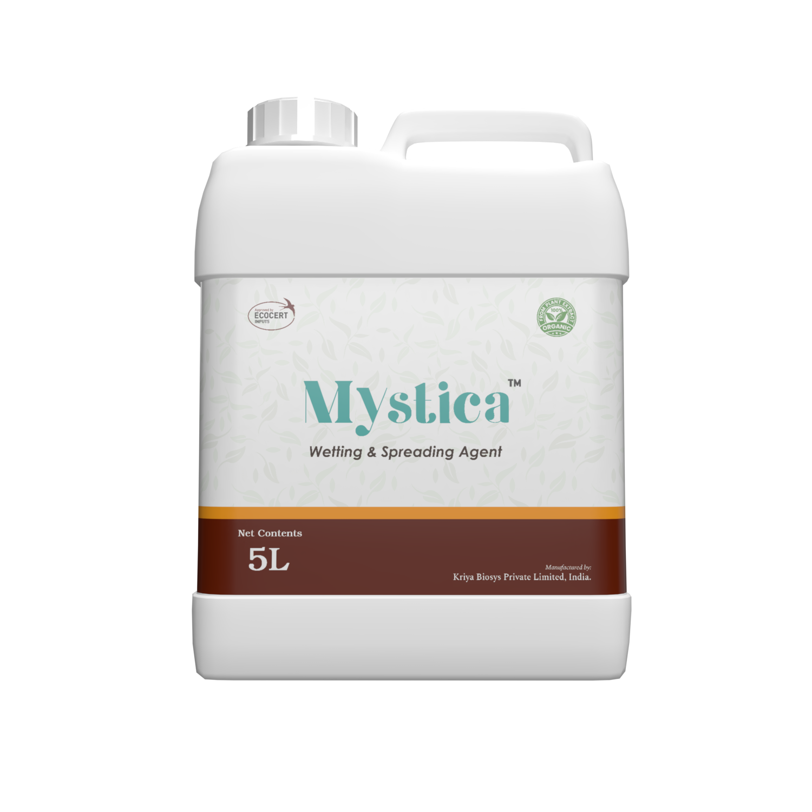

Mystica packshot

Mystica
Natural wetting & spreading agent — Liquid
Enhances spray coverage, reduces runoff, and improves uptake of foliar inputs across crops.
Mystica is a plant-derived wetting and spreading agent formulated to improve spray coverage, adhesion, and uptake of foliar applications. By lowering surface tension, Mystica ensures droplets spread uniformly on leaf surfaces, enhancing the effectiveness of biocontrols, fertilizers, and crop protection inputs. The formulation is residue-conscious and compatible with organic programs, giving distributors a premium adjuvant that supports sustainable crop care strategies.
Breaks surface tension to ensure droplets spread evenly across hydrophobic foliage.
Improves penetration and efficacy of foliar feeds and biocontrol agents.
Uses biodegradable, plant-based surfactants suitable for organic certification programs.
Available as a concentrated liquid for efficient inclusion in spray programs.
Natural wetting & spreading agent — Liquid
Enhances spray coverage, reduces runoff, and improves uptake of foliar inputs across crops.
Delivers homogenous film formation on leaves, improving contact with active ingredients.
Compatible with biologicals, fertilizers, and many crop protection products.
Biodegradable ingredients support residue-sensitive and organic certification markets.
| Application | Dosage | Water Volume | Application Interval | Guidance |
|---|---|---|---|---|
| Foliar sprays | 100–200 mL | Per 100 L of spray solution | With every spray | Add Mystica to tank before crop inputs; maintain agitation. |
| Soil drenches | 100 mL | Per 100 L of water | As needed | Enhance infiltration in raised beds or drip irrigation flushes. |
| Hydroponic nutrient solutions | 50–80 mL | Per 100 L reservoir | At nutrient change | Improves wetting of inert substrates and root zone penetration. |
Adjust rates based on spray water quality, canopy density, and compatibility guidelines.
Supply growers with a natural adjuvant that elevates every foliar application, supported by Kriya’s documentation and technical service.